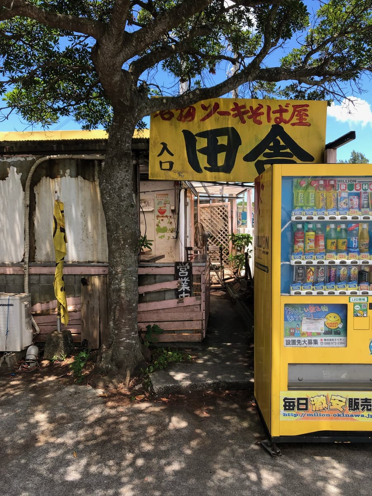
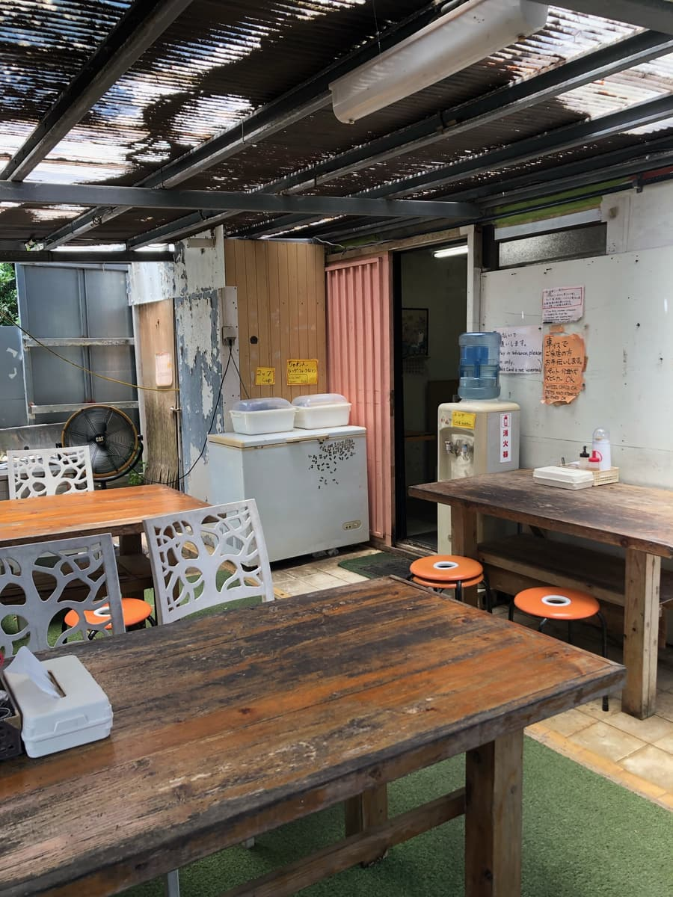
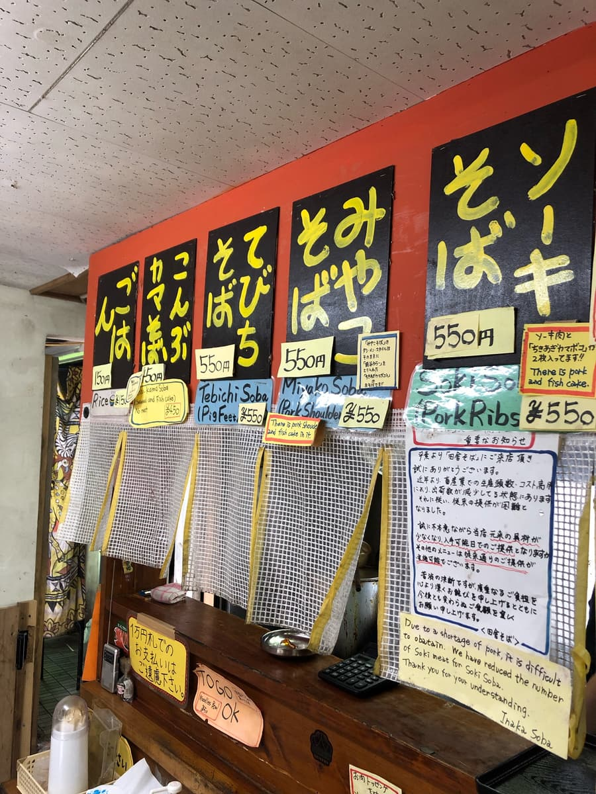
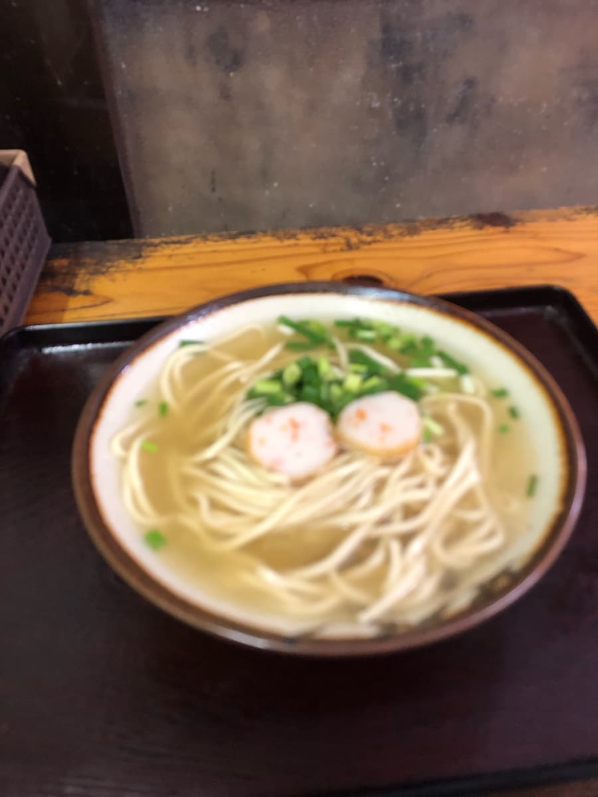
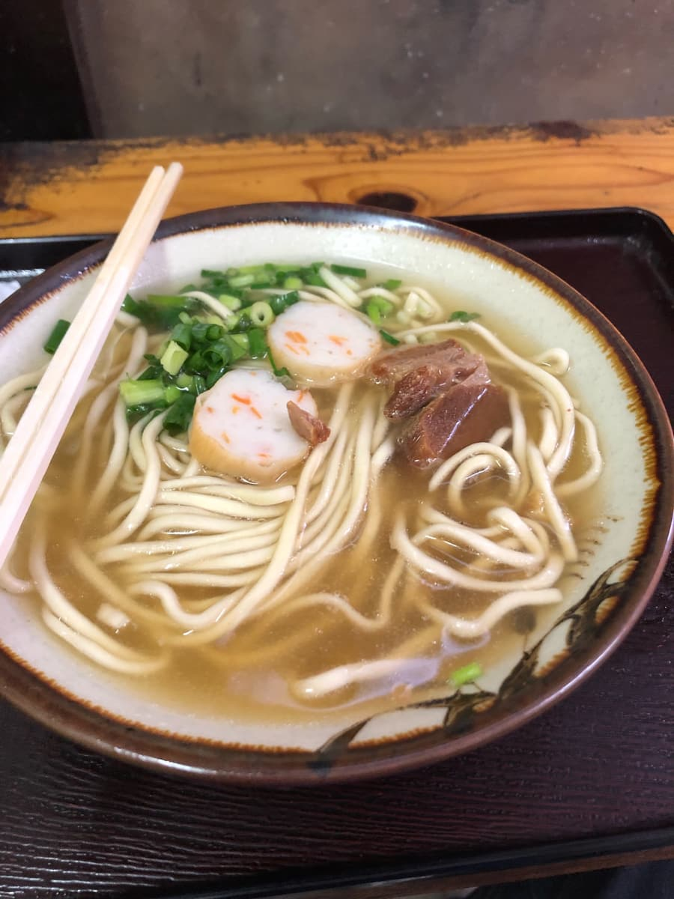

本篇文章是用AI（Chat GPT 4o）制作，我再部分加笔而成😁
位于读谷村上地的「田舎读谷店」。2024年8月去吃的😄

店面外观真的散发着「田舎（乡下）」的风情呢。入口的看板上大大地写着「田舎」，还主打着「排骨面」。园区内还有老旧的自动贩卖机，让人感受到一种怀旧的气氛。


走进店内，是质朴的内装，摆着让人联想到老式冲绳食堂的木头桌椅。墙上贴着几张告示，其中最引人注目的是「由于猪肉不足，排骨肉的数量减少」的通知。可以看出为了维持CP值，店家做了各种努力。
最近物价不断上涨，但这家店仍能以550日圆这么实惠的价格享用美味的面，真让人开心。「排骨面」也是同样的价格，我觉得是对荷包很友善的店。
从菜单中选了「宫古面」😆

「宫古面」送上来了呢。最先映入眼帘的是简单的外观。淡色的汤里细面排列得很漂亮，上面只放了两片圆形鱼板。乍看之下配料好像很少，但其实面条下面藏着瘦肉，这就是宫古面的传统呢😄

先喝一口汤，猪骨的风味在口中扩散开来，其中还能感觉到淡淡的甜味。我觉得这个汤头和其他宫古面的味道不一样。虽然是猪骨为底的汤，却带着某种温和的滋味，很有特色呢。
面条是偏细的直面，虽然软却有嚼劲，和汤头的搭配超棒。瘦肉稍微偏硬，还留有一些筋感（口感偏韧），不过每咬一口味道就更丰富，吃起来很有乐趣。
能以550日圆提供这种品质的面，「田舎读谷店」的CP值真的没话说。想轻松吃一碗美味的冲绳面时，我觉得是最适合的店。话虽如此，如果追求特别感，可能会觉得有点不足。不过这家店的魅力，说到底就是那份质朴与怀旧。让人觉得仿佛穿越回了过去冲绳的风景。
评分（9分/15分）：这次的「宫古面」，汤、面、配料都很普通，给☆3分的评价。绝对不差，反而以这个价位来说，这个味道是令人满意的一碗。让我想起同样CP值超群的冲绳市「章鱼烧强棒面」。我觉得在这家店用餐虽然不是特别豪华，却能感受到让心暖呼呼的温度。是让人还想再随意顺道造访的地方呢😊
面：★★★☆☆（3）
汤头：★★★☆☆（3）
配料：★★★☆☆（3）